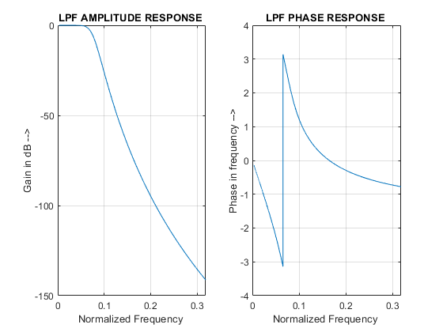

clc;
clear all;
close all;
format long
rp=1.5;
rs=35;
wp=1500;
ws=3500;
fs=15000;
w1 =2/ fs * wp ;
w2 =2/ fs * ws ;
[n , wn ] = buttord ( w1 , w2 , rp , rs ) ;
[ zb , pb , kb ] = butter (n , wn , 's') ;
[ bb , ab ] = zp2tf ( zb , pb , kb ) ;
[h , om ] = freqs ( bb , ab ,4096) ;
[ bz , az ] = impinvar ( bb , ab , 5* wn ) ;
freqz ( bz , az ,1024 , fs )
m = 20* log(abs( h ) ) ;
an = angle ( h ) ;
subplot (1 , 2 , 1) ;
plot ( om /pi , m ) ;
xlabel ('Normalized Frequency ') ;
ylabel ('Gain in dB -->') ;
title ("LPF AMPLITUDE RESPONSE ") ;
grid on ;
subplot (1 , 2 , 2) ;
plot ( om /pi , an ) ;
xlabel ('Normalized Frequency ') ;
ylabel ('Phase in frequency -->') ;
title ("LPF PHASE RESPONSE ") ;
grid on ;
fig2 = figure () ;
[ bz , az ] = impinvar ( bb , ab , 5* wn ) ;
freqz ( bz , az ,1024 , fs )
[k , C ] = tf2latc ( bz , az ) ;
k
C
k =
-0.992326746906417
0.991433617865691
-0.983533434133838
0.931079946320893
-0.523502435940994
C =
1.0e-03 *
0.220374582583052
0.551338871018112
0.450856919963717
0.129784995695565
0.007933691390511
0
